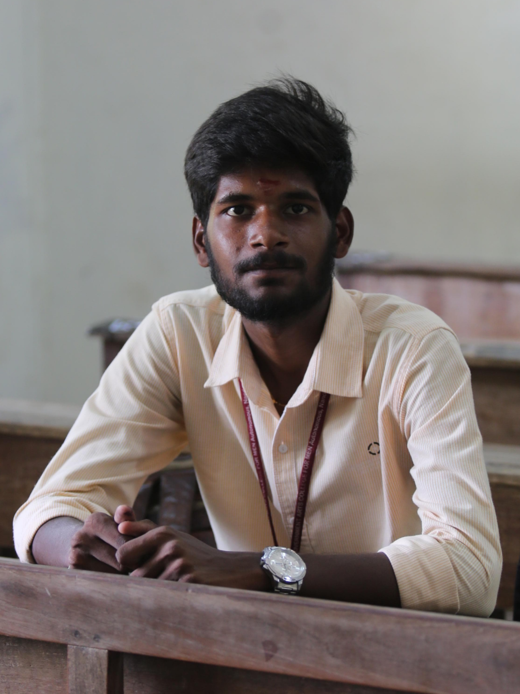

IBDதிரு. பாலமுருகன் தண்டபாணி, B.Sc. (இயற்பியல்),
Thiru. BALAMURUGAN DHANDAPANI, B.Sc. (Physics),
Founder, Owner & Curator of this Site
Welcome
Hello everyone, welcome to this site. I am Balamurugan Dhandapani, a student of Government Arts College for Men (Autonomous), Nandanam, Chennai - 600035, Tamil Nadu, India.
The vision and goal of this site is simple: learning is only truly possible through self-interest. When you study from a research perspective and search for related data online, you find countless sites scattered across the world — and in that search, people's interest in science can quickly fade. This is an incident I faced in my own life, and it is the reason I created this site: to make science easy to learn, with information collected together in one place.
Here, you'll find that curiosity is welcome and every question matters. Science isn't just formulas and facts — it's a way of seeing the world with wonder. Explore at your own pace, and let your interest lead the way.
About Me
My native place is Sivapuram village in Kallakurichi District, Tamil Nadu — a beautiful, natural, agriculture village. I completed my schooling, from 6th to 12th standard, at Government Boys Higher Secondary School, Devapandalam, Kallakurichi 606402. Most of my life there was spent playing sport over those seven years. On my very first day, I was afraid to go to that school — but by the end, it had become something completely different, so much so that even on my last day there, I wished I could stay one more day among the other students.
After finishing school, I continued my higher education in the field of Physics at Government Arts College for Men (Autonomous), Nandanam, Chennai 600035, in the metro city — an institution that has played an important role in my journey.
IBD stans for Indian Balamurugan Dhandapani - a name that carries, in every letter, my love for this soil and its people. I wear it with pride, as a devoted and responsible citizen of my beloved motherland, India.